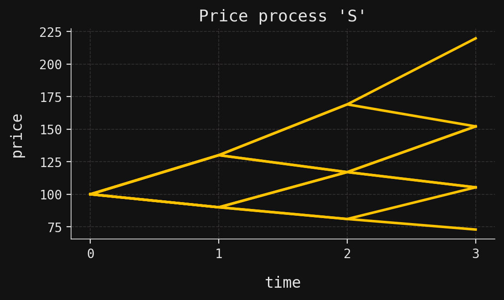
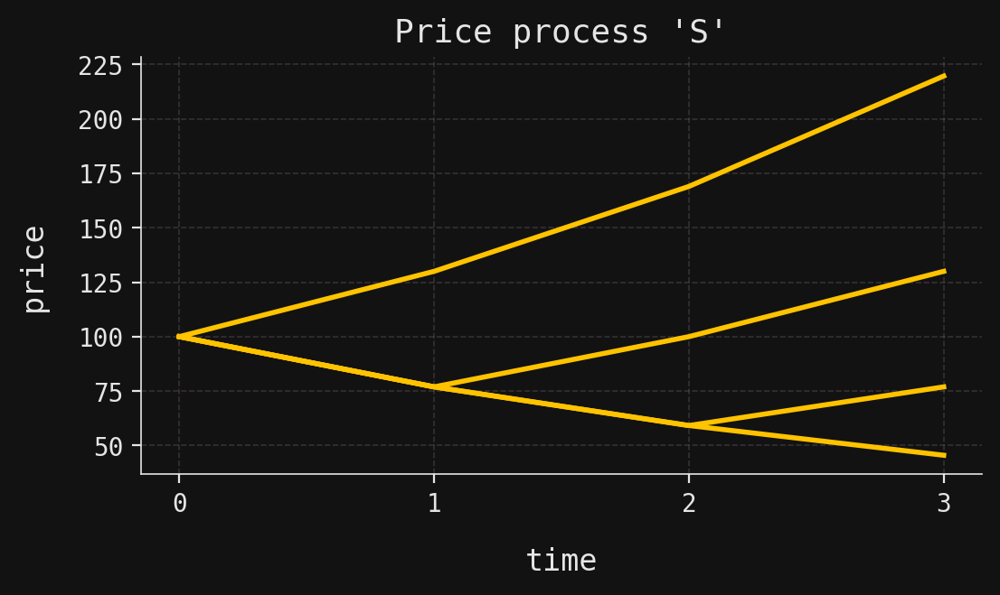
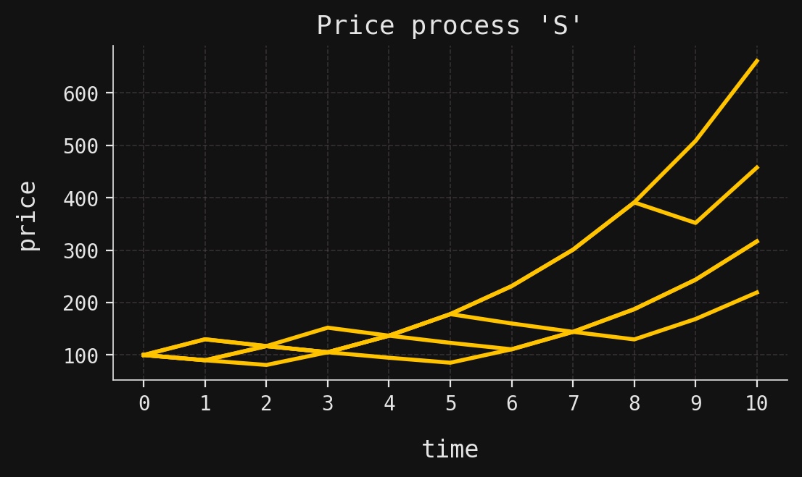

Finance with SigAlg I: Introduction and binomial pricing models
Finance
Pricing models
Binomial pricing models
Probability theory
Measure theory
Stochastic processes
Martingales
SigAlg
Python
One of the core problems in mathematical finance is the construction of models of prices of financial assets, whether these be commodity assets like agricultural goods or precious metals, equity assets like stocks, or practically anything traded on a market. Price models serve multiple purposes, including forecasting future prices, allowing investors to (attempt to) turn a profit through speculation, or allowing a firm to hedge its position against an undesirable movement in the price of a business-critical asset. They may also be used to price a contract written on the asset from which it derives its value—such contracts are known, naturally, as derivative contracts. (We will explore these contracts in the next post in this series.) From a scientific perspective, an accurate price model can help lend insight into some of the underlying economic mechanisms that drive prices.
Of course, the ultimate driver of an asset price is “the market” itself, by which we mean the relative levels of supply and demand of the asset. But the supply and demand curves are themselves shaped by innumerable forces, all connected and interacting in unimaginably complex ways. There is an analogy here with statistical physics: Though we might understand the individual microscopic mechanics of an isolated molecule of a gas, and how it would interact with another (single) molecule, when that molecule is included in a container of the gas, the number of inter-molecular interactions is so large that the state of the gas must be modeled probabilistically. Indeed, one might, in principle, determine the exact future state of every molecule of the gas, but the lesson taught to us by statistical physics is that it is more advantageous to treat the movements of the individual molecules as random, and then familiar macroscopic properties of the gas (like temperature) emerge as statistical measures derived from the underlying probability distributions.
Thus, through analogy, we might imagine that if we had access to complete information on the forces that shape the supply and demand curves, then we could predict with exact precision the price movements of all the assets traded on a financial market. But this is obviously not possible, and so we resort to modeling the price movements as random, just as a physicist does with the molecules of their gas. To complete the analogy, “macroscopic properties” of the assets and the contracts written on them (like risk-neutral prices) emerge as statistical measures derived from the underlying probability distributions.
As with mathematical modeling of any sort, there is a trade-off between real-world accuracy and parsimony: Usually, the more accurate a model, the more complex it is, perhaps with many more parameters than a simpler but less accurate model. The two types of price models discussed in this post—binomial and trinomial pricing models—have extremely simple structure, depending on only a handful of parameters. But this doesn’t mean that they are not useful. In fact, as expert readers know, many of the intricate structures used in more complex price models are present in these basic models in simplified form, so a prior study of these models is beneficial.
This post introduces these two models through the new finance module of the SigAlg Python package for measure-theoretic probability. SigAlg is designed to be an interface between abstract mathematics and concrete code. Mathematical objects that one manipulates with pen and paper—probability measures, \(\sigma\)-algebras, expectations and the like—all have representations in SigAlg, which differentiates it from purely computational Python libraries in which the underlying mathematical structures are left implicit. SigAlg directly exposes these structures.
Prerequisites
On the coding side, the prerequisites are minimal: The SigAlg API is written with fidelity to the mathematics as a core design principle, so as long as the reader can understand very basic Python and they have a good command of the mathematics, they should have little trouble following along with the code in this post.
On the mathematical side, the prerequisites are a bit steeper: We will freely use the language of basic measure-theoretic probability theory and stochastic process theory. We expect the reader to be familiar with probability measures, (filtered) \(\sigma\)-algebras, (conditional) expectations, Radon-Nikodym derivatives, martingales, etc.
The binomial model
The binomial price models in this post are examples of geometric processes, by which we mean the following. Suppose that \(S_t\) is a discrete-state stochastic process, with indices drawn from the discrete set \(t\in \{0,1,\ldots,T\}\), where \(T\) is the time horizon. We imagine that \(S_t\) is the price of an asset at time \(t\), with \(S_0\) being the initial (constant) price. Then \(S_t\) is a geometric process if there is a second process \(Z_t\) such that, for each time \(t\geq 1\), we have
\[ S_t = S_{t-1}Z_t. \tag{1}\]
The stochastic process \(Z_t\) is called the driving process and it is required to be an IID process, which means that the random variables \(Z_1,Z_2,\ldots,Z_T\) are independent and identically distributed. If we remember that a sequence of real numbers \(s_0,s_1,\ldots,s_T\) is called a geometric sequence if there is a constant \(z\) such that
\[ s_t = s_{t-1}z \tag{2}\]
for each \(t\geq 1\), then the reason \(S_t\) is called a geometric process is clear upon comparison of (1) and (2). (The random variable \(Z_t\) is “constant” in the sense that it is drawn from an IID sequence.) Both the binomial models described in this post, and the trinomial models described in the next, are of the form (1)—they only differ in the identity of their driving processes.
A geometric process may be contrasted with an arithmetic process, in which (1) is replaced with the additive relation
\[ S_t = S_{t-1} + Z_t, \tag{3}\]
where \(Z_t\) is again an IID driving process. Of course, arithmetic processes are more commonly known as random walks.
Through a log transform, a geometric process satisfying (1) may be converted into an arithmetic process:
\[ \log{S_t} = \log{S_{t-1}} + \log{Z_t}. \]
Thus, if asset prices follow a geometric process, then the log prices are a random walk. This has financial implications, because analysts are often interested in the per-period return \((S_t-S_{t-1})/S_{t-1}\) of an asset price. Using the usual tangent line approximation, we have
\[ \frac{S_t -S_{t-1}}{S_{t-1}} \approx \log{(S_t/S_{t-1})} = \log{S_t} - \log{S_{t-1}}, \]
and so returns are (approximately) the (backward) difference of a random walk process. But such differences are just IID processes:
\[ \log{S_t} - \log{S_{t-1}} = \log{Z_t}. \]
Hence, if asset prices are modeled as a geometric process, then returns are modeled as an IID process.
Now, moving on to the central definition of this post:
Besides the initial price \(S_0\) and the time horizon \(T\), a binomial model is parametrized by its up- and down-factors \(u\) and \(d\). But there’s a fifth parameter hidden in the driving process: Indeed, by the IID assumption, there is a parameter \(p\), with \(0 < p < 1\), such that \(Z_t = u\) with probability \(p\), and \(Z_t = d\) with probability \(1-p\) (for all \(t\)). In the context of pricing, the probability \(p\) is often called the real-world probability.
An example of a price trajectory (i.e., sample path) of a binomial model would be a sequence of prices of the form
\[ S_0 \xrightarrow{u} S_0u \xrightarrow{d} S_0 ud \xrightarrow{u} S_0u^2d. \]
Thus, the complete set of all price trajectories of a binomial model with time horizon \(T\) is in one-to-one correspondence with the set of all \(T\)-tuples drawn from the set \(\{u,d\}\), and hence there are \(2^T\) possible price trajectories. These price trajectories are often visualized as paths through a (sideways) binary tree. For example, suppose that we consider a binomial model with the parameters
\[ S_0 = 100, \quad u = 1.3, \quad d = 0.9, \quad T=3. \]
Then there are two possible prices at \(t=1\), either
\[ S_0u = 130.00 \quad \text{or} \quad S_0d = 90.00. \]
Similarly, there are three possible prices at \(t=2\), either
\[ S_0u^2 = 169.00, \quad S_0ud = 117.00, \quad \text{or} \quad S_0d^2 = 81.00. \]
All \(2^3=8\) possible price trajectories may be displayed as paths in the following tree, with an upward sloping edge corresponding to an up move (multiplication by \(u\)), and a downward sloping edge corresponding to a down move (multiplication by \(d\)).
The mapping from price trajectories to terminal prices is many-to-one. For example, there are three trajectories leading to the final price \(152.10\), namely, those corresponding to the following sequences of up and down moves:
\[ (u, u, d), \quad (u, d, u), \quad \text{and} \quad (d, u, u). \]
Turning to SigAlg, a binomial model is represented as an instance of the BinomialPricingModel class. Such an object is built using the parameters identified above, along with a parameter called risk_free_rate. We shall have much more to say about this latter parameter below, but for now, we set it equal to some value and then ignore it.
from sigalg.core import Time
from sigalg.finance import BinomialPricingModel
S_0 = 100 # initial price
r = 0.05 # risk-free rate — ignore for now
p = 0.7 # real-world probability
u = 1.3 # up-factor
d = 0.9 # down-factor
T = 3 # time horizon
# Instantiate a time index
time = Time.discrete(length=T)
# Instantiate a binomial model
S = BinomialPricingModel(
initial_price=S_0,
risk_free_rate=r,
up_prob=p,
up_factor=u,
down_factor=d,
time=time,
name="S",
)The class BinomialPricingModel is a subclass of SigAlg’s StochasticProcess, and as such, each binomial pricing model carries two methods to generate price trajectories, namely from_enumeration and from_simulation. The latter method generates Monte Carlo simulations of price trajectories, while the former exhaustively enumerates all trajectories. We invoke this first method, and use SigAlg’s interface with Matplotlib to visualize the trajectories:
import matplotlib.pyplot as plt
_, ax = plt.subplots(figsize=(6, 3))
yellow = "#FFC300"
S.from_enumeration()
S.plot_trajectories(ax=ax, colors=[yellow], y_label="price")
plt.show()
Notice that this printout is essentially the same as the binary tree displayed earlier, with four terminal prices. We can also print the price process itself:
print(S)Stochastic process 'S':
time 0 1 2 3
trajectory
0 100 130.0 169.0 219.7
1 100 130.0 169.0 152.1
2 100 130.0 117.0 152.1
3 100 130.0 117.0 105.3
4 100 90.0 117.0 152.1
5 100 90.0 117.0 105.3
6 100 90.0 81.0 105.3
7 100 90.0 81.0 72.9The printout shows the \(2^3 = 8\) trajectories over the time period ending at \(T=3\), all beginning at the initial price \(S_0=100\). The trajectories are indexed by the set \(\Omega = \{0,1,\ldots,7\}\), which serves as the domain of the process:
print(S.domain)Sample space 'Omega':
[0, 1, 2, 3, 4, 5, 6, 7]The component random variables themselves \(S_t: \Omega \to \mathbb{R}\) may be accessed via subscripting, which returns an instance of the RandomVariable class:
print(S[2], "\n") # Print the random variable S_2
print(S[2].domain, "\n") # Check its domain
print(type(S[2])) # Check its typeRandom variable 'S_2':
S_2
trajectory
0 169.0
1 169.0
2 117.0
3 117.0
4 117.0
5 117.0
6 81.0
7 81.0
Sample space 'Omega':
[0, 1, 2, 3, 4, 5, 6, 7]
<class 'sigalg.core.random_objects.random_variable.RandomVariable'>The cardinality of the sample space \(\Omega\) is \(2^T\), which scales exponentially with the time horizon. Obviously, this means that exhaustive enumeration of price trajectories is infeasible for large \(T\). SigAlg provides two options that the user can leverage for longer time horizons. The first is to operate the from_enumeration method in sparse enumeration mode. This requires that the down-factor \(d\) is equal to the reciprocal up-factor, \(d = 1/u\), so that the binary tree is recombining. We make this adjustment in the next code block, and plot the sparsely enumerated trajectories over the same time horizon \(T=3\) as before:
S.down_factor = 1 / u # Reset the down-factor
S.from_enumeration(enum_mode="sparse")
print(S)
_, ax = plt.subplots(figsize=(6, 3))
S.plot_trajectories(ax=ax, colors=[yellow], y_label="price")
plt.show()Stochastic process 'S':
time 0 1 2 3
trajectory
0 100.0 130.000000 169.000000 219.700000
1 100.0 76.923077 100.000000 130.000000
2 100.0 76.923077 59.171598 76.923077
3 100.0 76.923077 59.171598 45.516614
In sparse enumeration mode, the only price trajectories that are generated are those that consist first of a sequence entirely of down moves, followed by a sequence entirely of up moves. Every node/price in the binary tree is visited by one of these trajectories, and there are only \(T+1\) of them, allowing one to generate all prices for large \(T\). One of the downsides—as we shall see in a later post—is that we cannot use a binomial model in sparse enumeration mode to price path-dependent contingent claims.
The other option available to the user for longer time horizons is to use the from_simulation method mentioned above, which randomly samples price trajectories according to the real-world probability measure (see the next section). The following code block gives an example of its usage over a (slightly) longer time horizon \(T=10\):
T = 10
S.time = Time.discrete(length=T) # Set a longer time horizon
S.down_factor = d # Reset to the original down-factor
S.from_simulation(n_trajectories=5, random_state=42)
_, ax = plt.subplots(figsize=(6, 3))
S.plot_trajectories(ax=ax, colors=[yellow], y_label="price")
plt.show()
\(\sigma\)-algebras and filtrations
Every stochastic process \(S_t\) is defined on an ambient probability space \((\Omega, \mathcal{F},P)\), where \(\mathcal{F}\) is a \(\sigma\)-algebra of events in the sample space \(\Omega\) and \(P\) is a probability measure defined on \(\mathcal{F}\). To be clear, this means that each function \(S_t:\Omega \to \mathbb{R}\) is a random variable on this probability space.
For the binomial models \(S_t\) considered in this post, SigAlg automatically constructs the underlying probability space \((\Omega,\mathcal{F},P)\). The sample space \(\Omega\) was described above: It consists simply of a finite index set \(\Omega = \{0,1,\ldots,n\}\) up to some non-negative integer \(n\). As an example, the sample space for our first binomial model from the previous section is displayed in the first column of the following printout:
T = 3
S.time = Time.discrete(length=3)
S.from_enumeration()
print(S)Stochastic process 'S':
time 0 1 2 3
trajectory
0 100 130.0 169.0 219.7
1 100 130.0 169.0 152.1
2 100 130.0 117.0 152.1
3 100 130.0 117.0 105.3
4 100 90.0 117.0 152.1
5 100 90.0 117.0 105.3
6 100 90.0 81.0 105.3
7 100 90.0 81.0 72.9The sample space is \(\Omega = \{0,1,\ldots,7\}\). The \(\sigma\)-algebra \(\mathcal{F}\) is (by default) the power set on \(\Omega\):
print(S.sigma_algebra)Sigma algebra 'sigma(S)':
atom ID
trajectory
0 (100.0, 130.0, 169.0, 219.7)
1 (100.0, 130.0, 169.0, 152.1)
2 (100.0, 130.0, 117.0, 152.1)
3 (100.0, 130.0, 117.0, 105.3)
4 (100.0, 90.0, 117.0, 152.1)
5 (100.0, 90.0, 117.0, 105.3)
6 (100.0, 90.0, 81.0, 105.3)
7 (100.0, 90.0, 81.0, 72.9)To understand the printout, we recall that every \(\sigma\)-algebra on a finite sample space \(\Omega\) is determined by its atoms, which are the minimal non-empty events. The atoms \(\{A_i\}_{i\in I}\) (indexed by some finite set \(I\)) partition the sample space \[ \Omega = \bigcup_{i\in I} A_i. \]
In SigAlg, \(\sigma\)-algebras are represented by mappings \(\Omega \to I\) from sample points \(\omega\) to atom identifiers \(i\), where \(i\) is the index of the unique atom \(A_i\) that contains \(\omega\). In the printout above, the set \(I\) of atom identifers is evidently the set of trajectories, and so the atoms of the default \(\sigma\)-algebra are all eight singletons. In other words, the \(\sigma\)-algebra is indeed the power set.
Notice in the printout that the name of the default \(\sigma\)-algebra is \(\sigma(S)\). The reader familiar with measure theory will recognize that this notation refers to the \(\sigma\)-algebra generated by \(S\). In this context, we view the stochastic process as a \(4\)-dimensional random vector:
\[ S: \Omega \to \mathbb{R}^4, \quad S(\omega) = (S_0(\omega),S_1(\omega), S_2(\omega), S_3(\omega)). \]
Then \(S\) (as a random vector) generates a \(\sigma\)-algebra whose atoms are precisely its nonempty level sets:
\[ S^{-1}(s) = \{ \omega \in \Omega \mid S(\omega) = s \}, \]
for \(s\in \mathbb{R}^4\). Notice that these level sets are indeed naturally indexed by \(4\)-tuples \(s\), i.e., trajectories of the stochastic process.
S[2].sigma_algebraSigma algebra 'sigma(S_2)':
atom ID
trajectory
0 169.0
1 169.0
2 117.0
3 117.0
4 117.0
5 117.0
6 81.0
7 81.0Probability measures
Using the real-world probability \(p=0.7\), we define a probability measure \(P\) on the sample space \(\Omega = \{0,1,\ldots,7\}\) by setting
\[ P(\{\omega\}) = p^k (1-p)^{T-k} \]
for each \(\omega\in \Omega\), provided that \(\omega\) corresponds to a trajectory with \(k\) up moves and \(T-k\) down moves. This probability measure is accessible using the probability_measure attribute of the binomial model, which returns an instance of SigAlg’s ProbabilityMeasure class:
P = S.probability_measure
print(P, "\n") # Print the measure
print(type(P)) # Check its typeProbability measure 'P':
probability
trajectory
0 0.343
1 0.147
2 0.147
3 0.063
4 0.147
5 0.063
6 0.063
7 0.027
<class 'sigalg.core.probability_measures.probability_measure.ProbabilityMeasure'>For easy comparison, we can print the probabilities next to the trajectories:
S.print_trajectories_and_probabilities() 0 1 2 3 probability
trajectory
0 100 130.0 169.0 219.7 0.343
1 100 130.0 169.0 152.1 0.147
2 100 130.0 117.0 152.1 0.147
3 100 130.0 117.0 105.3 0.063
4 100 90.0 117.0 152.1 0.147
5 100 90.0 117.0 105.3 0.063
6 100 90.0 81.0 105.3 0.063
7 100 90.0 81.0 72.9 0.027In the mathematical theory, probability measures are supposed to be defined only on the events inside a \(\sigma\)-algebra on the sample space \(\Omega\); but in SigAlg, we do not enforce this requirement. In particular, a probability measure may be treated like a probability mass function, and evaluated on sample points \(\omega \in \Omega\):
print(round(P(3), 3)) # Print the probability P(3)0.063The component random variables of the process inherit the same probability measure. For example, we can check the probability measure of the random variable \(S_2:\Omega \to \mathbb{R}\) by accessing its probability_measure attribute:
print(S[2].probability_measure)Probability measure 'P':
probability
trajectory
0 0.343
1 0.147
2 0.147
3 0.063
4 0.147
5 0.063
6 0.063
7 0.027As we learned in our first course on probability theory, every random variable induces a pushforward (or image) probability measure. In the case of the component random variable \(S_2\), this is the discrete measure \(P_{S_2}\) on \(\mathbb{R}\) defined by
\[ P_{S_2}(\{s\}) = P\left( \{\omega \in \Omega \mid S_2(\omega)=s\}\right), \]
for each \(s\in \mathbb{R}\). The support of this measure is the range of \(S_2\), namely, the three-element set \(\{169.00, 117.00, 81.00\}\). To obtain the pushforward measure \(P_{S_2}\) in SigAlg, we call the pushforward method:
S[2].pushforward()Probability measure 'P_S_2':
probability
output
81.0 0.09
117.0 0.42
169.0 0.49Arbitrage
In finance, the word arbitrage refers to an opportunity to turn a profit with no risk of loss. (More precisely, the probability of loss is \(0\).) The types of arbitrage relevant to our discussion in this post seek to exploit the relative “mispricing” of two assets in the market. While from an investor’s point of view an arbitrage is a shot at free money, from a modeling point of view, arbitrages are generally viewed as mathematical pathologies. In this short section, we seek conditions on binomial pricing models in order to avoid arbitrages.
So, we begin with two assets. One of them is like any of the assets we have discussed so far in this post, while the other is assumed to be risk-less, in the sense that its price process is fully deterministic. Specifically, we suppose that there is a positive real number \(r\), called the risk-free rate, such that an amount \(B_t\) invested in the asset at time \(t\) will evolve to \((1+r)B_t\) at time \(t+1\). For example, we might imagine that \(B_t\) measures a cash position held in a bank that earns per-period interest at rate \(r\). (The rate \(r\) is assumed constant in time.) Crucially, we assume not only that we can hold cash in the bank, but that we can also borrow from the bank at the same rate. The difference between the two is signified by positive \(B_t\) (holding cash in the bank, earning interest at rate \(r\)) versus negative \(B_t\) (borrowing from the bank, paying interest at rate \(r\)). For future convenience, we set \(R=1+r\), called the risk-free gross return.
Now, assume that we hold a cash position in the bank, as well as either a short or long position in the other asset, which we assume has price process \(S_t\), measured in USD per unit (for example). Then at each time \(t\geq 0\), our two-asset portfolio would be valued at
\[ V_t = B_t + S_t \Delta_t, \tag{4}\]
where \(\Delta_t\) is the number of units of the asset held with price process \(S_t\). A positive value of \(\Delta_t\) represents a long position, while a negative value represents a short position. One time period later, the value of our portfolio will evolve to
\[ R B_t + S_{t+1} \Delta_t. \tag{5}\]
Relative to the cash position, the second asset is assumed to be risky (for example, an equity asset). This “risk-less vs. risky” difference has ramifications if, for example, we attempt to model \(S_t\) using a binomial model and avoid arbitrage. Specifically, suppose that such a binomial model has up- and down-factors \(u\) and \(d\), respectively. As most investors are (at least mildly) risk-averse, we would expect a larger return for the risky asset versus the non-risky one, in compensation for bearing risk. Thus, we would expect at least that \(R \leq u\). But, the risk-free gross return \(R\) cannot be so small that \(R<d\), for otherwise an arbitrage appears. Indeed, if \(R<d\), then at time \(t\) we could borrow \(S_t\) from the bank (so that \(B_t = -S_t\)) and then purchase one unit of the risky asset (so that \(\Delta_t=1\)). Then our portfolio is valued at \(V_t=0\) at the time of transaction, representing no initial net outlay of capital, while the value of the portfolio will evolve to
\[ R B_t + S_{t+1} \Delta_t = -RS_t + S_{t+1} \geq S_t(d-R) >0 \]
one time period later. This is an arbitrage, and in order to avoid it, we must assume that \(R\geq d\).
Similarly, while it is natural to assume that \(R\leq u\) based on considerations of risk, we can confirm mathematically that if this were not true, then another aribtrage presents itself. For if \(R>u\), then at time \(t\) we could short one unit of the risky asset (so that \(\Delta_t=-1\)) and invest the proceeds in the bank (so that \(B_t = S_t\)). Again, our portfolio would be valued at \(V_t=0\) at the time of transaction, while one time period later its value will evolve to
\[ RB_t + S_{t+1} \Delta_t = RS_t - S_{t+1} \geq S_t(R- u) >0. \]
This is another arbitrage, and so we must assume \(R \leq u\).
Logically speaking, our arguments above show that, if there are no arbitrages in the binomial model, then we must have
\[ d \leq R \leq u. \tag{6}\]
Interestingly, the converse is also true, which leads us to our first glimpse of one of the foundational results in mathematical finance:
With the theorem as justification, the inequalities (6) together are called the no-arbitrage condition. A fully rigorous proof of the theorem requires a bit more precision in the definition of arbitrage; we will leave the interested reader to look up a proof in a suitable reference (for example, Proposition 2.26 in [1]).
Equivalent martingale measures
The statement of the Fundamental Theorem of Asset Pricing (in Theorem 1) is referred to as “version 1”. In this section we discuss a second version, which more closely aligns with the statement one would find in textbooks, and which deals with so-called equivalent martingale measures.
By way of introduction, consider again the cash position held in the bank. Suppose that we deposit an initial amount \(B_0\) at time \(t=0\), and hold the position over a period of time with no additional cash infusions or withdrawals. Obviously, then, if we know the balance in the account at a particular time \(t\), say \(B_t\), then we know the balance one time period later:
\[ B_{t+1} = RB_t, \]
where \(R\) is the risk-free gross return. Reciprocally, the current balance is the present value of the future balance, i.e.,
\[ B_t = \frac{1}{R} B_{t+1}. \tag{7}\]
So, given the current balance \(B_t\) at time \(t\), we know for certain what the balance will be one period into the future. We ask: Is there something analogous that we could say about the price process \(S_t\) of the risky asset?
Working toward an answer to this question, suppose that a time \(t\) is fixed, and that we observe the current price \(S_t\) of the asset. Of course, since the price process is stochastic, we would never be able to predict the future price \(S_{t+1}\) with absolute certainty—this would require seeing into the future. But, as we know from basic probability theory, the expectation \(E(S_{t+1} \mid S_t)\) is the best approximation of \(S_{t+1}\), given \(S_t\), in the sense that it is the closest \(\sigma(S_t)\)-measurable random variable to \(S_{t+1}\) in mean squared error. So, with the expectation in place of \(S_{t+1}\), and taking the time value of money into account, we then wonder if something analogous to (7) holds—something like
\[ S_t = \frac{1}{R} E(S_{t+1} \mid S_t)? \tag{8}\]
However, this obviously cannot hold, because the expectation is discounted via \(R=1+r\), which is built from the risk-free rate \(r\). But the asset under discussion is risky, and hence we would expect that the correct discount factor (if it even exists) should include a risk premium.
Now, nothing has been mentioned so far about the dynamics of the price process \(S_t\). However, as we will show presently, if we model this price process with a binomial model, then something beautiful happens. In preparation, we first need to unwind the expectation \(E(S_{t+1} \mid S_t)\) carefully, in the case that we use a binomial model with up- and down-factors \(u\) and \(d\), respectively, and real-world probability \(p\). We suppose that \(\Omega\) is the sample space underlying the random variables \(S_t\), and that \(P\) is the corresponding real-world measure on \(\Omega\) built from \(p\). Thus, the marginal probabilities of the component price random variables are given (as we saw above) by the formula
\[ P\left( S_t = S_0u^{k}d^{t-k}\right) = \binom{t}{k} p^k (1-p)^{t-k}, \]
for \(k=0,1,\ldots,t\). The \(\sigma\)-algebra generated by \(S_t\), namely \(\sigma(S_t)\), has \(t+1\) atoms given by the sets
\[ A_k = \{ \omega \in \Omega \mid S_t(\omega) = S_0 u^k d^{t-k}\}. \]
The vector space \(L^2(\Omega, \sigma(S_t), P)\) then has a finite orthonormal basis given by the normalized indicator functions
\[ \frac{I_{A_k}}{\sqrt{P(A_k)}}, \]
one for each \(k=0,1,\ldots,t\). Thus, the expectation \(E(S_{t+1} \mid S_t)\) is given by its generalized Fourier series:
\[ E(S_{t+1} \mid S_t) = \sum_{k=0}^t \left \langle S_{t+1}, \frac{I_{A_k}}{\sqrt{P(A_k)}} \right \rangle \frac{I_{A_k}}{\sqrt{P(A_k)}} = \sum_{k=0}^t \frac{1}{P(A_k)} E(S_{t+1}I_{A_k}) I_{A_k}. \]
For each \(k=0,1,\ldots,t\), write \(s_k = S_0 u^k d^{t-k}\), for brevity. Then, we have
\[ \begin{align*} \frac{1}{P(A_k)} E(S_{t+1}I_{A_k}) &= \frac{1}{P(A_k)} \int_{A_k} S_{t+1} \, dP \\ &= \frac{ us_k P\left( S_{t+1} = us_k \right) + ds_kP\left( S_{t+1} = ds_k \right)}{P\left( S_t = s_k\right)} \end{align*} \]
Bibliography
[1]
Björk, T., Arbitrage theory in continuous time, fourth, Oxford finance series, Oxford University Press, 2020.